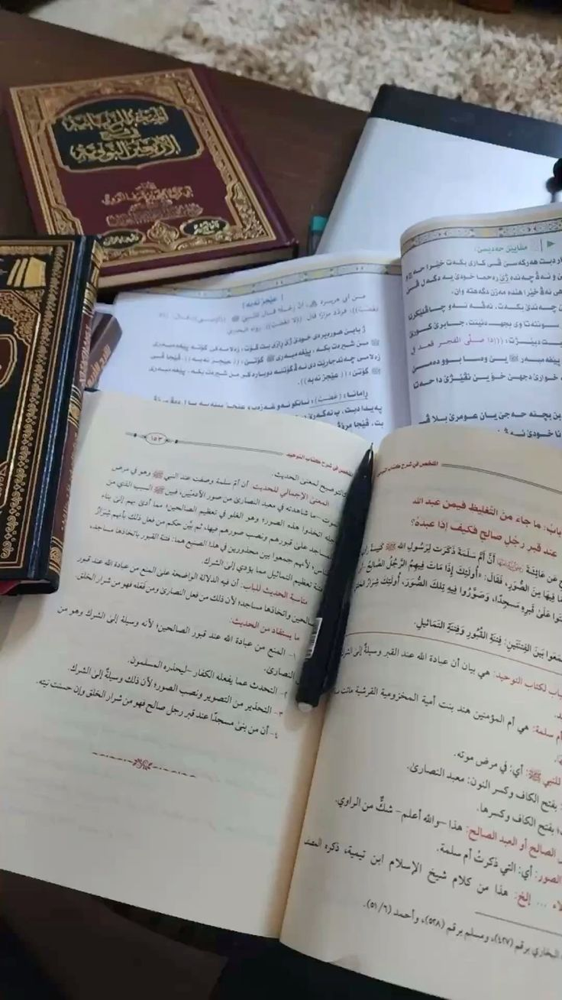
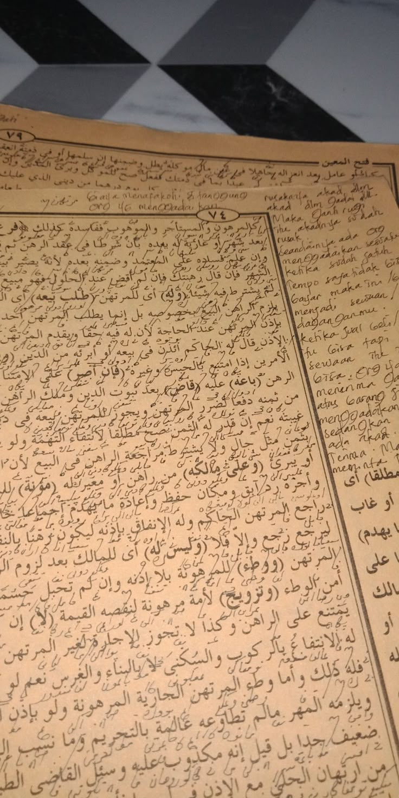
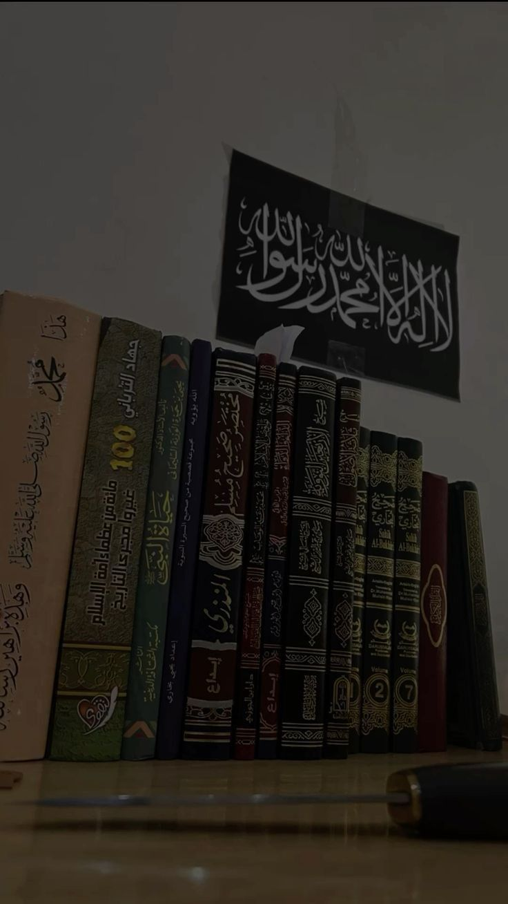
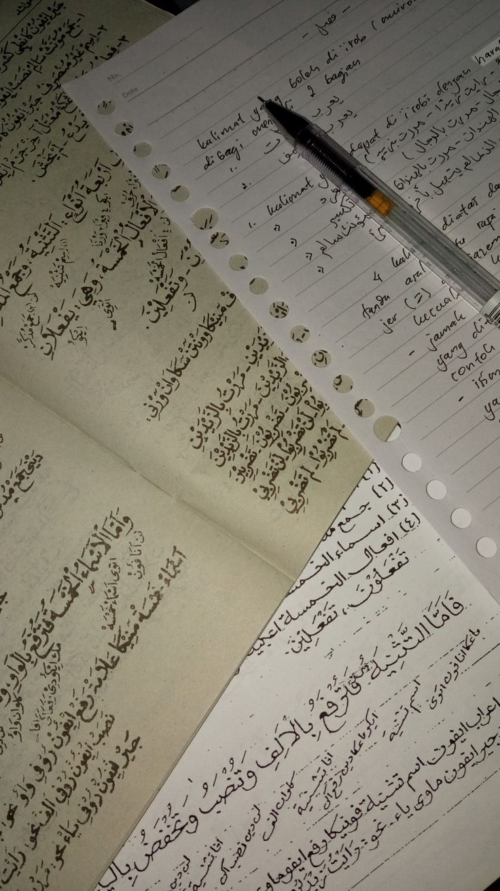
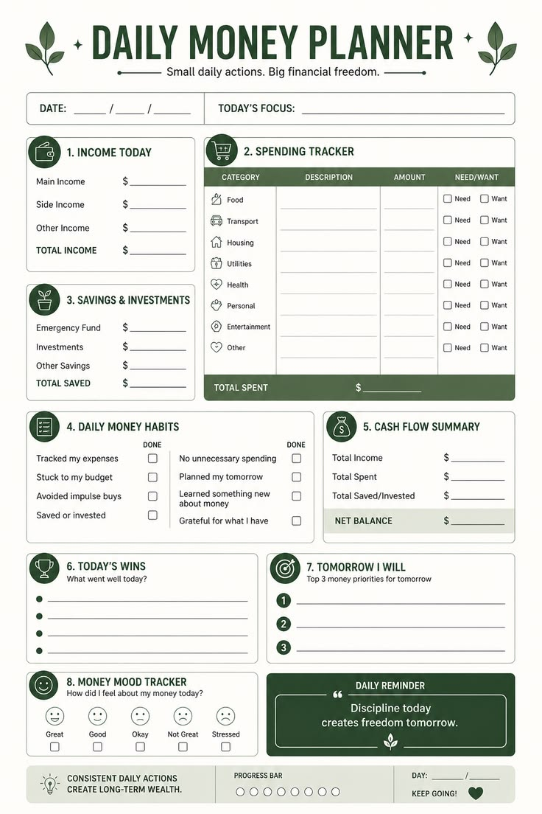

Membimbing kajian Siroh Nabawiyah untuk meneladani perjalanan hidup Rasulullah ﷺ serta mengambil hikmah dan pelajaran bagi kehidupan sehari-hari.
See
Mengajarkan ilmu Tauhid untuk memperkokoh keimanan, mengenal Allah dengan benar, dan membangun fondasi ibadah yang lurus.
See
Membimbing pembelajaran Fikih secara sistematis agar memahami hukum-hukum ibadah dan muamalah sesuai tuntunan syariat Islam.
See